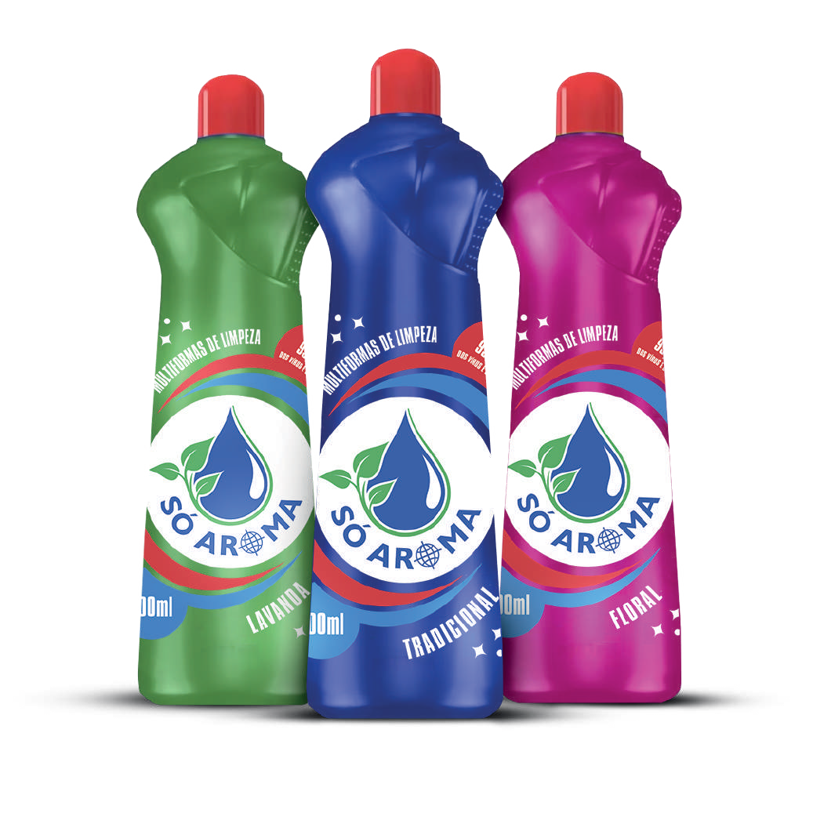

Limpadores Multi Uso
O limpador multiuso oferece alta eficiência e fragrâncias envolventes: Tradicional, Lavanda e Floral. Limpa profundamente todas as superfícies e deixa um perfume duradouro. Prático, potente e com aroma que transforma sua rotina de limpeza.
Disponível em embalagens de: 500ml.
Downloads
